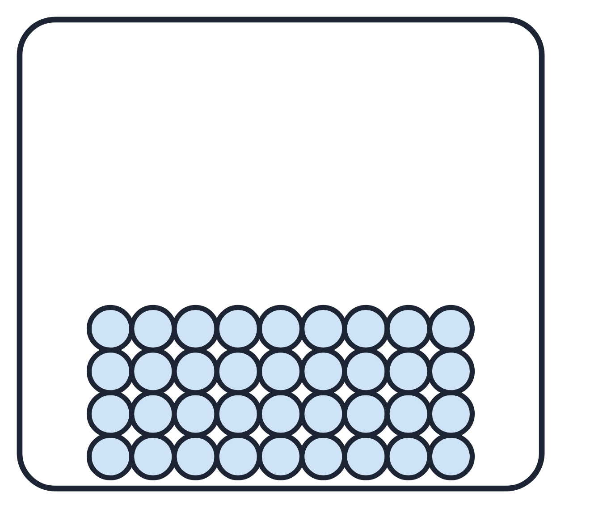
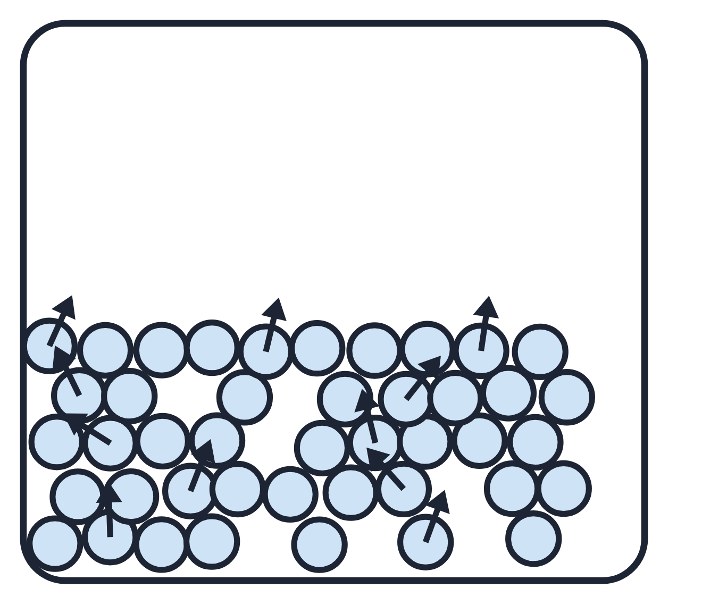
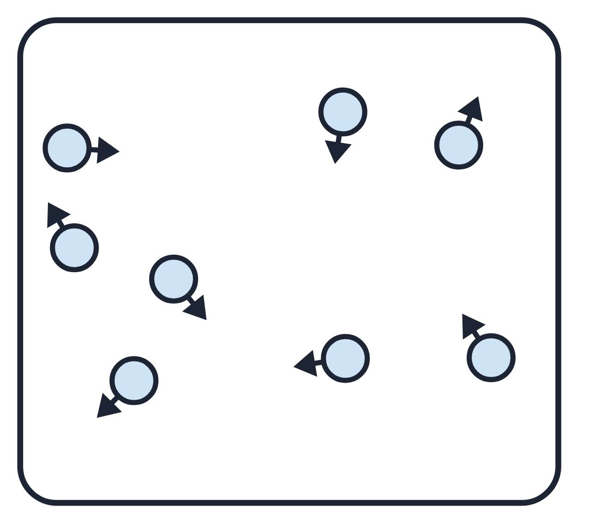
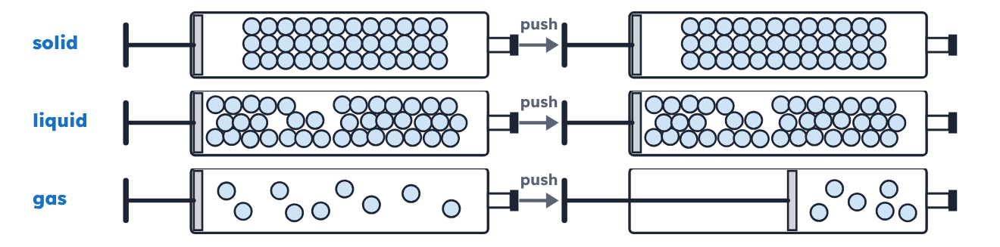
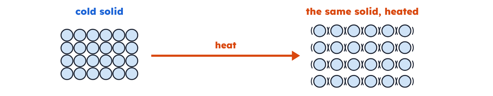

M2 Lesson 1 · Matter, particles, solids, liquids and gases
1▶️ Watch | 2✏️ Train on paper | 3🎯 Check |
 1Solid |  2Liquid |  3Gas |

Liquid: cannot be compressed: the particles already touch.
Gas: can be compressed: the particles move closer together.

The particles do NOT get bigger. The spaces between them get bigger.
Solids, liquids and gases will expand when heated and contract when cooled.
Definitions to learn: matter and the particle model (pp 36 to 37)
Matter: Matter is anything that takes up space and has mass.
The particle model: 1. All matter is made up of tiny particles. 2. The particles of matter are always moving. 3. The particles have spaces between them. 4. Adding thermal energy to matter makes the particles move faster.
Definitions to learn: solid, liquid, gas (p 38)
Solid: Forces of attraction between particles are very strong, therefore particles vibrate in position. Closely packed in a regular pattern (a lattice). Fixed shape and volume.
Liquid: Forces of attraction are weaker, therefore particles move faster and are free to flow over each other. Liquids take the shape of the container.
Gas: Forces of attraction are very weak, therefore particles move very fast and can move far apart. Gases take the shape and volume of the entire container. Only gases can be compressed.
The check-in comes after it